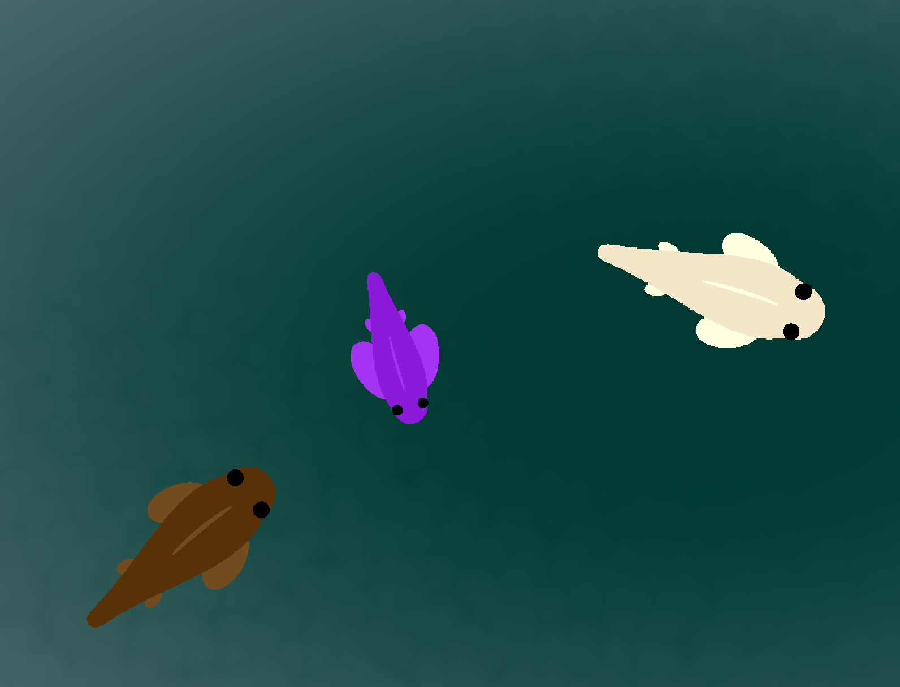
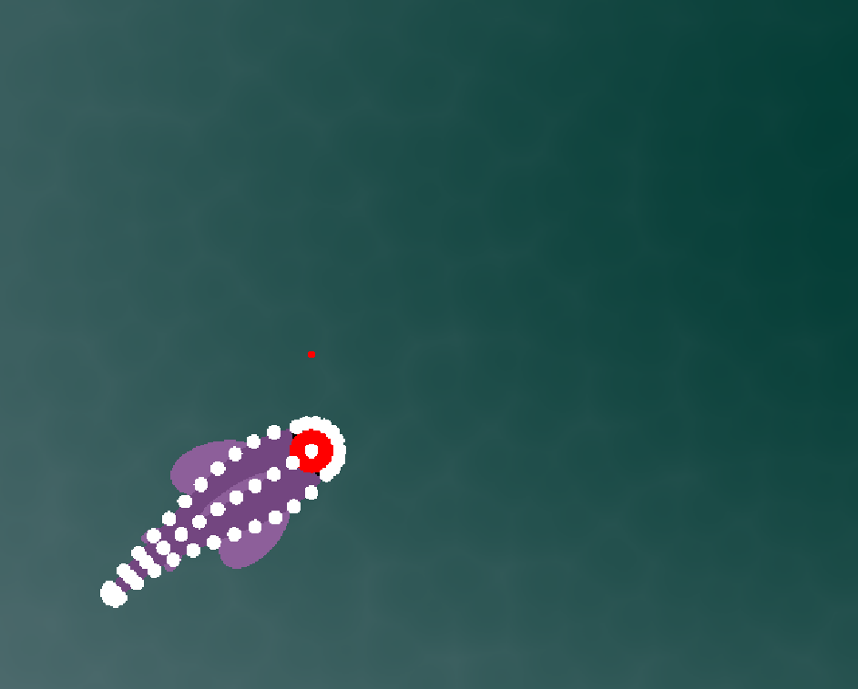
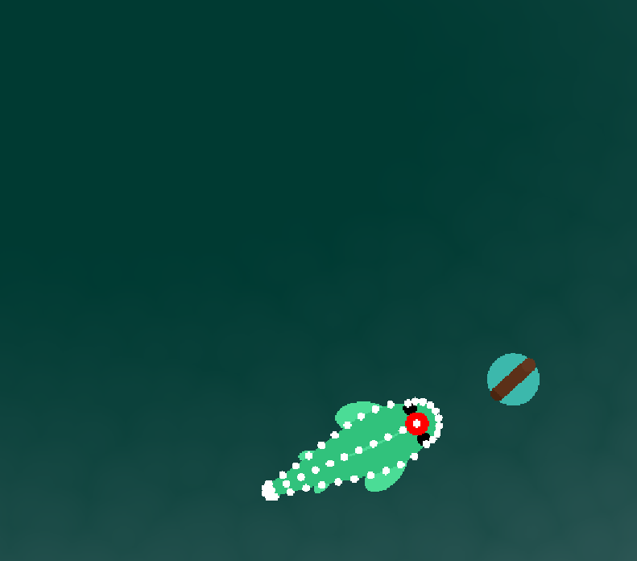
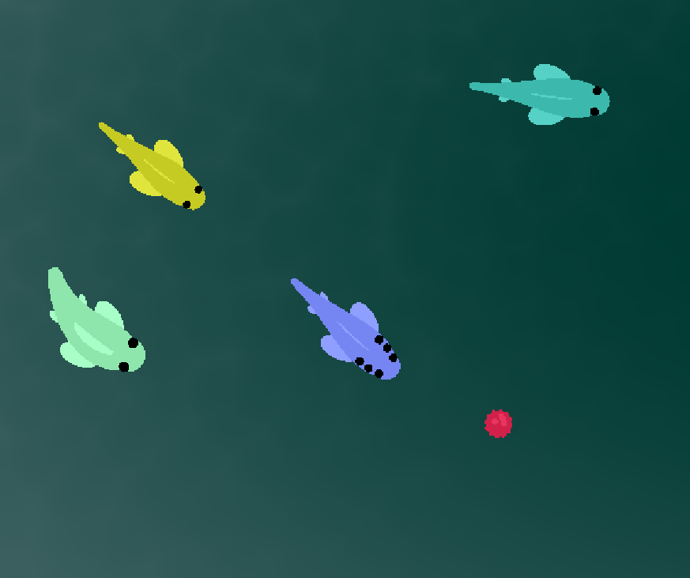

Drexel University, January 2026 - May 2026




e:koi was made for my CI102 & CI103 courses at Drexel. This is a
simulated koi pond using entirely procedural animation for all fish.
The simulation includes movement, rudimentary pathfinding, death,
and reproduction mechanics.
Made in Godot with C#.
Lavender Vanina (that's me!) - Lead Design, Procedural Animation, UI
Stelios Potamousis - Pathing & Behavior